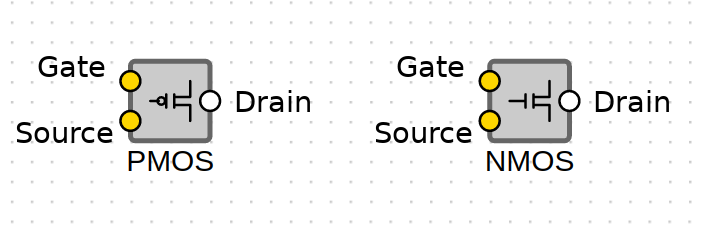

Procedure

Components which will be used for this:PMOS, NMOS, Clock, Delay, Input, Output.
Steps:
- Select positive level pass transistor from the list on the top of the page.
- Connect source of PMOS with drain of NMOS and connect input pin serially to it.
- Connect drain of PMOS with source of NMOS and connect output pin serially to it.
- Connect clock to the delay and connect that to gate of PMOS (clock bar).
- Connect clock to gate of NMOS (clock).
- Press the simulate button and observe the graph.
Components which will be used for this:PMOS, NMOS, Clock, Delay, Input, Output.
Steps:
- Select negative level pass transistor from the list on the top of the page.
- Connect source of PMOS with drain of NMOS and connect input pin serially to it.
- Connect drain of PMOS with source of NMOS and connect output pin serially to it.
- Connect clock to gate of PMOS (clock).
- Connect clock to the delay and connect that to gate of NMOS (clock bar).
- Press the simulate button and observe the graph.
Components which will be used for this:Pass transistor, Clock, Delay, Input, Output, OR gate.
Steps:
- Select multiplexer from the list on the top of the page.
- Place two pass transistors on the workspace.
- Connect clock to delay (clock bar) and connect it to gate of NMOS (NGate) of 1st pass transistor and gate of PMOS (PGate) of 2nd pass transistor.
- Connect an Input pin to each transistor's input.
- Connect clock to gate of PMOS of first transistor and gate of NMOS of 2nd transistor.
- Connect the outputs of the two transistors to an OR gate.
- Connect the output of the OR gate to an output pin.